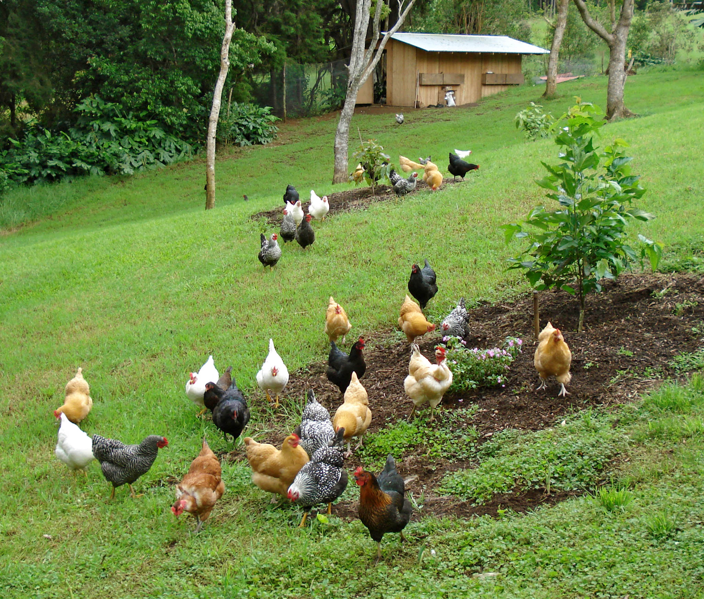

Chicken Farm

The chicken (Gallus gallus domesticus) is a type
of domesticated fowl, a subspecies of the red junglefowl
(Gallus gallus). They are one of the most common and
widespread domestic animals, with a total population of
23.7 billion as of 2018[1], up from more than 19 billion
in 2011.[2] There are more chickens in the world than any
other bird or domesticated fowl.[2] Humans keep chickens
primarily as a source of food (consuming both their meat
and eggs) and, less commonly, as pets. Originally raised
for cockfighting or for special ceremonies, chickens were
not kept for food until the Hellenistic period
(4th–2nd centuries BC).[3][4]
Genetic studies have pointed to multiple maternal origins
in South Asia, Southeast Asia, and East Asia,[5] but with
the clade found in the Americas, Europe, the Middle East
and Africa originating in the Indian subcontinent. From
ancient India, the domesticated chicken spread to Lydia
in western Asia Minor, and to Greece by the 5th century
BC.[6] Fowl had been known in Egypt since the mid-15th
century BC, with the "bird that gives birth every day"
having come to Egypt from the land between Syria and
Shinar, Babylonia, according to the annals of Thutmose
III.[7][8][9]